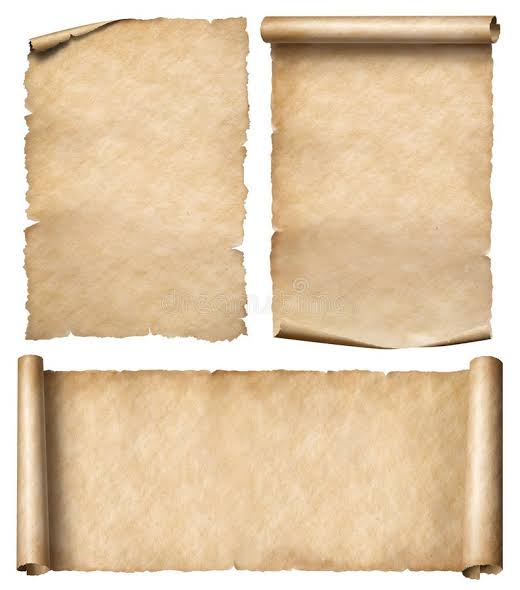

Папирус, пергамент или бересту человечество знало с древнейших времен. А вот бумага в ее классическом варианте появилась куда позже. И хотя нечто похожее на нее давным-давно делали и в Китае, но все было не то: «бумага» из пеньки легко намокала, из бамбука — была тяжелой, а из шелка — баснословно дорогой. Изобретение бумаги, близкой к нашему пониманию этого слова, приписывается сановнику империи Хань по имени Цай Лунь, которому было поручено навести порядок в «бумажной промышленности». И он навел. А помогли ему в этом... осы.
Наблюдательный чиновник заметил, что материал, из которого насекомые вьют свои гнезда, имеет светлый цвет, прочен, легок и не намокает от дождя. Определил он и его состав: древесина, растительные волокна и слюна ос, которая имеет водоотталкивающие свойства. Проведя сотни опытов, находчивый Цай Лунь пришел к выводу, что похожую смесь можно получить из коры тутового дерева, конопляного лыка, ветоши, волокон шелковицы и древесной золы. Все смешать, а потом, как в известной рекламе, просто добавить воды. Получившуюся «кашу из топора» Лунь раскладывал на сито, сушил на солнце, а затем разглаживал при помощи камней.
